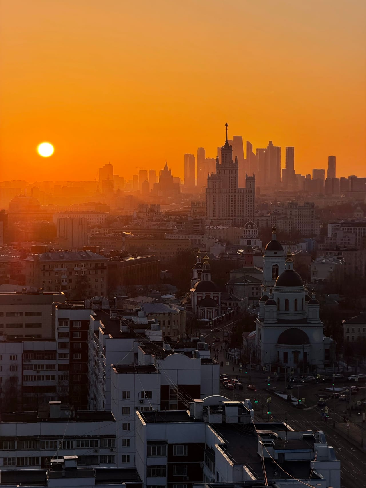

Блог
Статьи о крышах Москвы
Что видно с высоты, где ловить закат, как подготовиться к фотосессии и почему организованная прогулка спокойнее поисков открытой двери. Пишем по опыту наших крыш — без воды.
Свежее
Все статьи
Над городом

Блог
Что видно с высоты, где ловить закат, как подготовиться к фотосессии и почему организованная прогулка спокойнее поисков открытой двери. Пишем по опыту наших крыш — без воды.
Свежее
Над городом